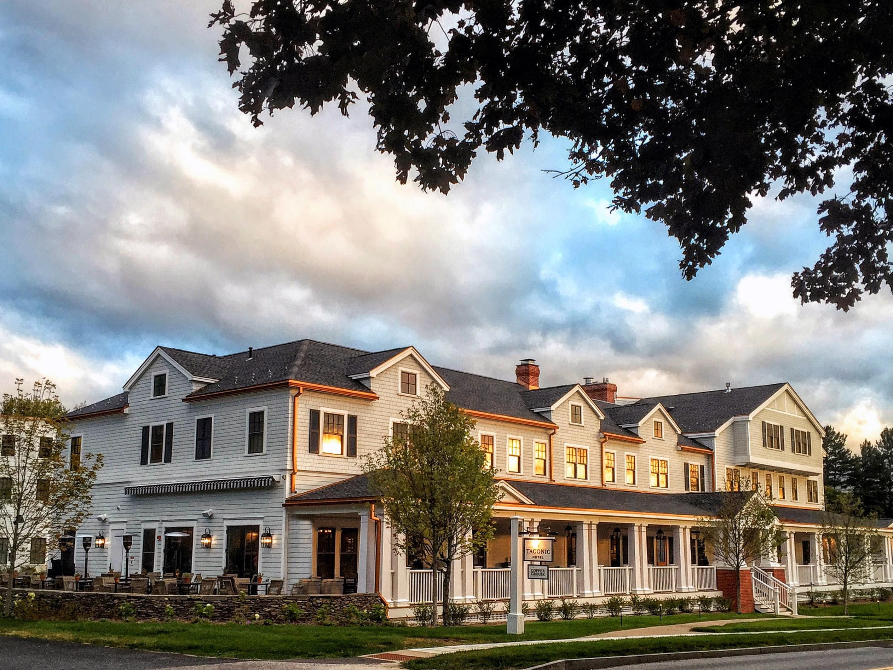

Kimpton Taconic
3835 Main Street
Manchester Village, VT 05254

The Kimpton Taconic is a small hotel located in Manchester Village. We felt right at home in the Kimpton and hope you do, too!
Getting There
The Kimpton Taconic is a 3.5 hour drive from Boston Logan Airport, or 3 hours if you’re Melissa’s mom.
There is plenty of parking at the hotel, but please note that Manchester is out of the Uber/Lyft circuit. We will provide a shuttle service after the reception for guests who choose to leave a car at the Kimpton overnight.